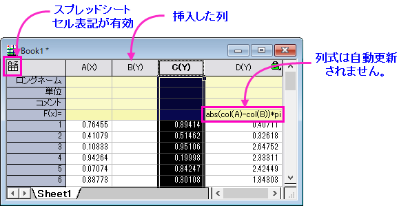

列ショートネームの制限
Column-Short-Names-Restrict
バージョン2017より、OriginのワークブックにおいてMS Excelと同様の「スプレッドシートセル表記(SCN)」が サポートされました。Originの古いバージョンを使用していたユーザは、次の点にご注意ください。
- SCNの目的は、より単純で読みやすい構文で列式を作成できるようにすることです。
- SCNはデフォルト設定で全ての新しいワークブックで有効になっています。
- SCNが有効な時、列ショートネームは編集不可で並び替えもできません（古いバージョンとは異なりますのでご注意ください）。
- SCNが有効な時（デフォルト）、列ショートネームは、次のように列の番号に従ってアルファベット順に並べられます：
- A, B, …, Z, AA, BB, …, ZZ, .etc
ワークシート内で列を挿入したり移動したりすると、列ショートネームがアルファベット順に並べ替えられます。
新しいシンタックスで列式を書く場合
- A はショートネームが 「A」の列を参照します。以前のcol(A) と同じです。
- A1 は列Aの最初の行を参照します。col(A)[1] と同じです。
- [Book2]Sheet1!A は、現在のワークシート上にはなくても、Book2、Sheet1の最初の列を参照します。これは、スプレッドシートセル表記が有効な場合にのみ利用できます。
- A:Aは、A と同じようにショートネーム"A"の列を参照するのに使用できます (col(A) と同様)。
- 列ショートネームまたは行インデックスの前に$ を付けると、自動入力セル式または列の数式でこの列または行を固定することを意味します。
「以前の」col/wcol構文は今でも使用できますが、新しい構文の利点の一部はサポートされません。たとえば、古い構文を使用するF(x)=または値の設定式を使って派生した値の列の前に、ワークシート列を挿入した場合、新しい列の配置を反映するような列の式になるように自動的に更新されません。

|
Note:
列式でショートネームによって列を参照する場合
- ショートネームは、3文字までに制限されます。そうでない場合、列参照は認識されません。ショートネームが3文字を超える場合、 col() または wcol()シンタックスを使用して参照します。
- 関数をTokenのように文字列パラメータとして使用する場合、一重引用符の代わりに二重引用符を使用する必要があります。
|

|
サンプル 1
次のような Excel型の数式を F(x)列ラベル行に入力して、
A-abs(B)
列Aから列Bの絶対値を引いた値を計算します。
サンプル 2
次の数式を 列値の設定 ダイアログ に入力します。
B+A2
列Bと列Aの2番目のセルを足します。
サンプル 3
Book1, sheet1の最初の列で、F(x)列ラベル行に以下の式を入力します。
[Book2]Sheet1!A+[Book2]Sheet1!B
別のワークブック[Book2]Sheet1にあるデータによって値を設定します。
|
繰り返しになりますが、スプレッドシートセル表記(SCN)が有効な場合、列のショートネームは編集できません。
|
Note:
簡単な表記が可能なワークブックとプロジェクトは、旧バージョン（2017より前）では利用できません。
|
Originでのワークシート計算に関連する列の命名の詳細については、次のトピックを参照してください。